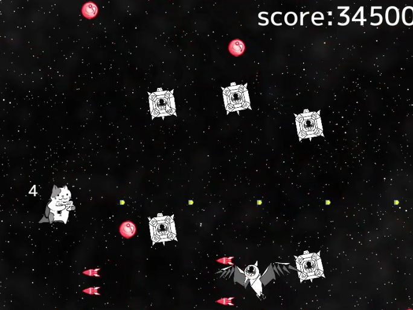
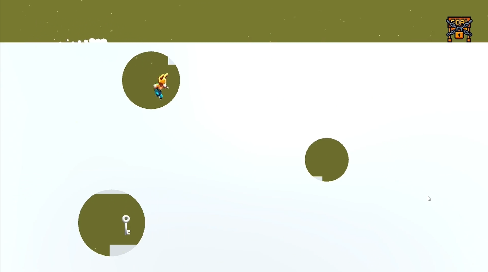
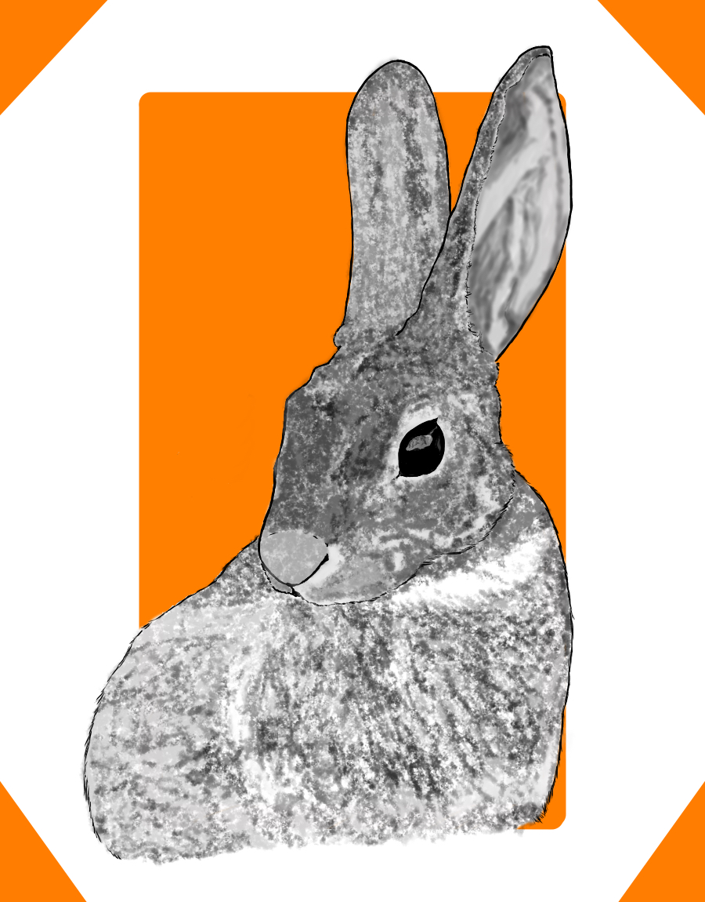
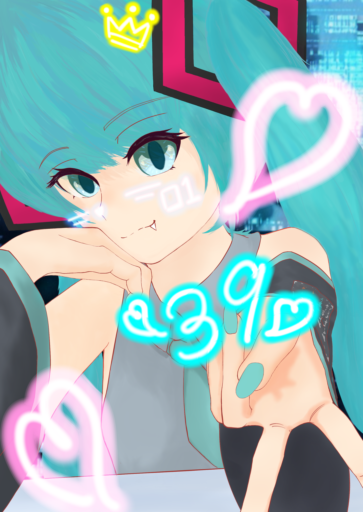
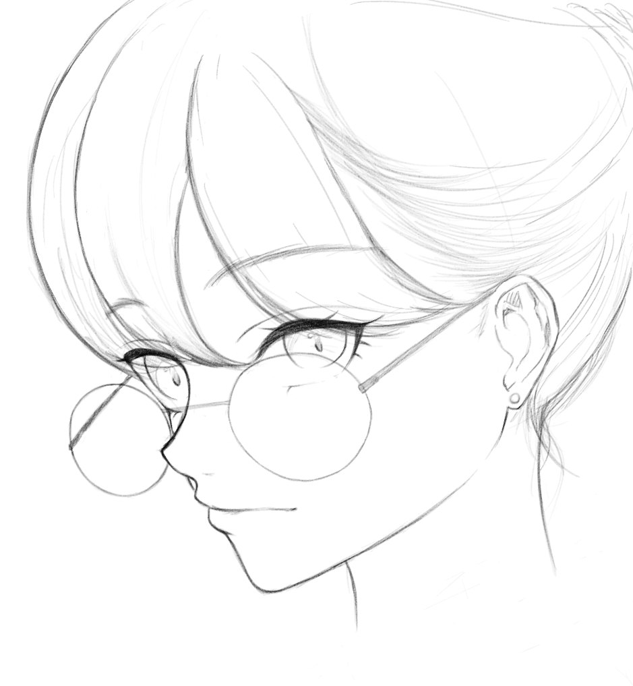
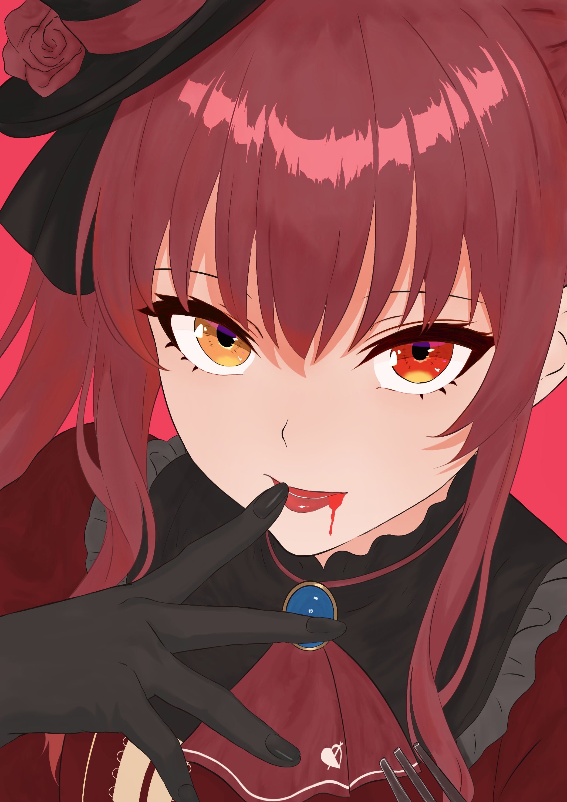
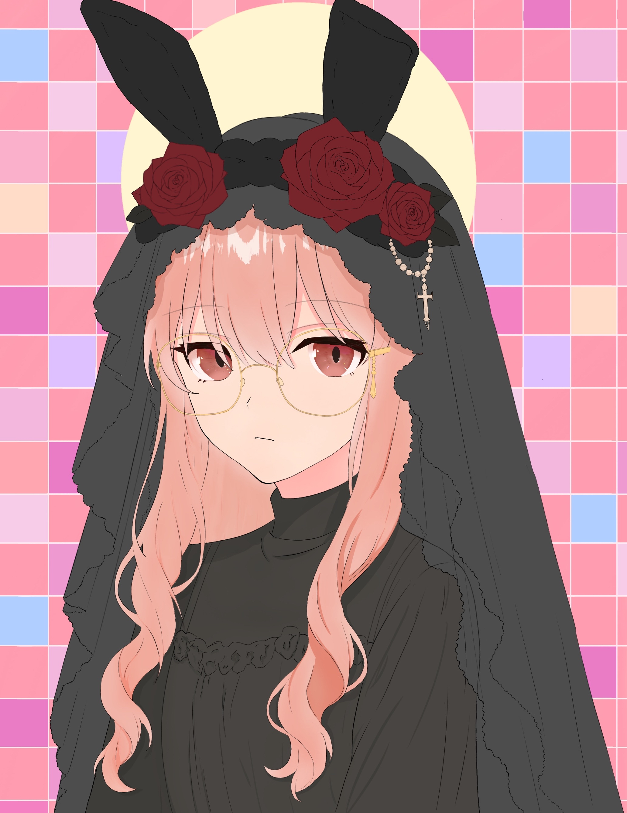

FUKUYAMA
Hayato
Welcome to my portfolio!
I create games, illustrations, and 3DCG.
Profile
🎓 Education
2019/4 Entered 青森県立八戸北高等学校
2022/3 Graduated 青森県立八戸北高等学校
2022/4 Entered 会津大学コンピュータ理工学部コンピュータ理工学科
📕 Languages (Years of experience)
C (4Y)
C# (4Y)
C++ (3Y2M)
OpenGL (1Y)
JavaScript (1Y)
HLSL (1Y5M)
TypeScript (2M)
Python (2M)
🛠 Tools (Years of experience)
Unity (4Y2M)
Blender (2Y)
ibisPaint (7Y)
Projects

AnimalRobot
📅 Period: 2022/8 ~ 2022/10
🕹️ 3Dor2D: 2D
🧠 Language: C++
🎨 Role: Programmer, Designer
👥 Members: 5
サイドスクロール型 弾幕シューティング
本作は、機械化されてしまった動物たちを救うため、プレイヤーが悪の天才科学者「ドクター・メカ・オクトパス」に立ち向かう、サイドスクロール型の弾幕シューティングゲームです。
道中では、かつての仲間だった動物たちが、それぞれの生態や特徴をモチーフにした固有の攻撃パターンで立ちはだかります。
容赦なく降り注ぐ弾幕をかいくぐり、彼らの心を取り戻し、物語の最終局面で待ち受けるドクター・メカ・オクトパスとの決戦に挑みましょう。
Robot Enhance
📅 Period: 2024/1 ~ 2024/2
🕹️ 3Dor2D: 3D
🧠 Language: C#(Unity)
🎨 Role: Programmer, Designer
👥 Members: 1
3Dアクション × ビジュアルノベル ハイブリッドゲーム
本作は、主人公 Sophia（ソフィア）を操作し、ロボットの Rosie（ロージー）と協力しながら物語を進めていくゲームです。
アクションパートを通じて、失われたロージーのパーツを集めることが主な目的となります。
このゲームは大きく分けて2つのパートで構成されています。
パーツを回収する シューティング／アクションパート と、物語が展開される ビジュアルノベルパート です。
アクションパートで集めたパーツの数がエンディングに直接影響し、複数の物語分岐が用意されています。
また、静的な2Dタイトル画面では物足りないと感じたため、Unityの3D表現を最大限活用しました。 その結果、 タイトル画面やノベルパートのUI背景にはアニメーション付きの3Dシーンを採用し、より高い没入感と雰囲気を演出しています。
[player’s perspective]

[scene setup]

ぐるぐる！シュガー★ファクトリー
📅 Period: 2024/3 ~ 2024/4
🕹️ 3Dor2D: 2D
🧠 Language: C#(Unity)
🎨 Role: Programmer
👥 Members: 2
制限時間付き 落ちもの系パズルゲーム
本作は、落下してくるキャンディを揃えて消し、制限時間内にハイスコアを目指すテンポの良いパズルゲームです。 シンプルなルールでありながら、爽快感のあるコアループにより、何度も遊びたくなる設計になっています。
本作では、一般的な落ちものパズルとは異なる独自の重力計算を採用しています。
キャンディは常に下方向へ落下するのではなく、一定の範囲内に入ると円の中心へ引き寄せられるように重力が作用する仕組みになっています。
この設計により、従来の落ちものゲームとは一線を画した、予測しつつも新鮮なキャンディの挙動を楽しむことができます。
もう一つの大きな特徴は、プレイヤーの進行に応じて変化する動的難易度調整システムです。キャンディを多く消すほど、必要なマッチ数、落下速度、キャンディの最大サイズがリアルタイムに調整されていきます。 序盤は落ち着いたテンポでルールを学ぶことができ、進行するにつれてスピード感と難易度が段階的に上昇し、プレイを重ねるほどより手応えのある没入感の高い体験が楽しめます。
Soul Light
📅 Period: 2024/8 ~ 2024/8
🕹️ 3Dor2D: HD-2D
🧠 Language: C#(Unity)
🎨 Role: Programmer, Designer
👥 Members: 1
闇と光の世界を巡る パズルアクションアドベンチャー
本作は、闇に覆われた世界を舞台にしたパズルアクションゲームです。 プレイヤーは「光を分け与える力」を持つ少女を操作し、世界に再び光を取り戻す旅へと出発します。
このゲームでは、没入感のある雰囲気づくりと、誰でもクリアできることを重視したレベルデザインを意識しました。
ゲーム冒頭にチュートリアルを交えて進行するパートを設けることでゲームの基本操作と世界観をゲームに不慣れな方でも楽しみながら学べるように設計しました。
また、RayFire を用いたオブジェクト破壊演出を取り入れることで、世界への没入感を一層高めています。
ゲームの進行に応じて環境が物理的に崩壊する表現を加えることで、プレイヤーの行動が世界に影響を与えている感覚や敵の強大さを強く演出しています。
さらに、プロローグではBlender の Geometry Nodes を用いて テキストのモーフィングアニメーション を制作しました。
形状変化を精密に制御することで、物語体験を引き立てる滑らかで表現力のある演出を実現しています。
Lost of Music
📅 Period: 2024/8 ~ 2024/12
🕹️ 3Dor2D: HD-2D
🧠 Language: C#(Unity)
🎨 Role: TeamLeader, Programmer
👥 Members: 7
壊れたオルゴールの音色を取り戻す物語
本作は、音を失ってしまった壊れたオルゴールの内部を探索するアクションパズルゲームです。 プレイヤーは探索を進める中で、楽器（能力）を入手し、それらを活用して新たなルートを解放しながら、徐々にオルゴールの旋律を取り戻していきます。
ゲーム序盤では、静寂や物悲しいBGMを流し、物語の始まりにある孤独や静けさを表現しています。 楽器を集めるごとに、BGMに新しい音のレイヤーが重なっていく構成となっており、最終的には壮大なBGMが完成することで進行の実感、感情的な盛り上がり、そして物語のクライマックスを強く印象づける体験を提供します。
Breaking Chess
📅 Period: 2024/12 ~ 2025/2
🕹️ 3Dor2D: 3D
🧠 Language: C#(Unity)
🎨 Role: Programmer
👥 Members: 1
型破りでユニークなチェス
本作はBitSummit: The 13th Summer of Yokaiへの出展を目的として制作したゲームです。
チェスが持つ戦略性はそのままに、プレイヤーが慣れ親しんできた常識やルールをあえて崩し、新鮮な体験を与えることに焦点を当てています。
たとえば、駒の重さによって チェス盤そのものが崩壊>するといった、従来では考えられない仕掛けを取り入れました。
伝統的なチェスのルールにひねりを加えることで、新鮮さと驚きを兼ね備えた体験を提供することを目指しています。


OldMaid(BaBaNuki):Prototype
📅 Period: 2025/5 ~ 2025/5
🕹️ 3Dor2D: 3D
🧠 Language: C#(Unity)
🎨 Role: Programmer
👥 Members: 1
Apple ARKit × Animancer を用いたフェイシャルアニメーションの実践作品
本プロジェクトは、UnityアセットであるApple ARKit>とAnimancerの実践的な活用を目的として制作しました。
Apple ARKit を用いたリアルな NPC の表情表現に加え、Animancer による表情アニメーションのクロスフェードを活用することで、表情間の滑らかな遷移を実現しています。
また、FinalIKを用いたよりリアルなハンドアニメーションの実践にも挑戦しており、カードをつかむ際の指の形などは一切アニメーションクリップを用いずに実装しています。
Oops!!!!
📅 Period: 2025/7 ~ 2025/8
🕹️ 3Dor2D: 3D
🧠 Language: C#(Unity),HLSL
🎨 Role: Programmer
👥 Members: 1
予測不能なトラップが待ち受ける地獄
「Oops!!!!」 は、数多くの仕掛けやトリックが詰め込まれた3Dサプライズアクションゲームです。
各ステージには、停電時にのみ現れるルートや、予測不能な動きをするトラップなど、さまざまな試練が用意されています。
試行錯誤とひらめきを武器に、次々と襲いかかる不意打ちを乗り越えていきましょう。
「覗き穴（Peek Hole）」表現への挑戦：シェーダーによる実装(HLSL)
「Oops!!!!」では、壁に設けられた 「覗き穴」表現 に特に力を入れました。
開発初期の段階では、ステージが壁で完全に囲まれており、プレイヤーの視界が極端に制限されることで、窮屈なプレイ感になってしまうという課題がありました。
この問題を解決するため、Unity上で独自の HLSL カスタムシェーダーを実装しました。
このシェーダーは、特定のオブジェクトの背後にある 指定したオブジェクトのみを可視化できる仕組みになっており、
壁自体は半透明になりつつ、プレイヤーやトラップ、ギミックなど必要な要素だけを表示します。
これにより、まるで壁に空いた小さな穴から中を覗き込んでいるかのような、直感的で没入感のある視覚表現を実現しています。

Creating games that thrill not just players, but also developers.
Illustrations






3DCG works


Contact
Thanks for watching!